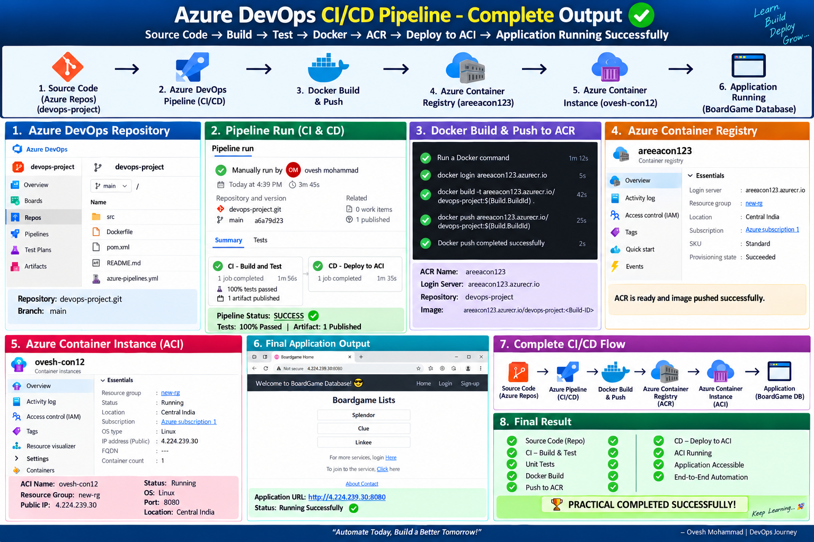

End-to-End CI/CD Pipeline using GitHub, Azure DevOps, Maven, Docker, Azure Container Registry and Azure Container Instances.
GitHub → Azure DevOps → Maven Build & Test → Docker Build → ACR → ACI → Application
Java | Spring Boot | Maven | GitHub | Azure DevOps | Docker | ACR | ACI
